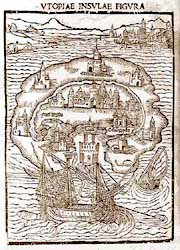
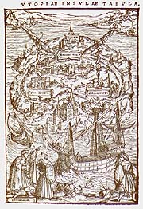

| Utopia | by Thomas More |
|  |  |
| Woodcut Image from 'Utopia', 1516 printed in Louvain | Woodcut Image from 'Utopia', 1518 edition, prited in Basel |
| Web sites: |
| The Text |
| Sir Thomas More: Additional Sources |
| A Bibliography of Thomas More's Utopia |
| Sir Thomas More and Utopia |
| Bibliography: |
| Utopia
- Translated and Edited by Robert M. Adams, W.W. Norton and Co. Second Edition, 1975 |
| Utopia Fact or Fiction, Lorainne Stobbart, Alan Sutton Publishing Ltd., 1992 |
| Maintained
by: Chris Jennings Last Updated: 11-Aug-2001 |